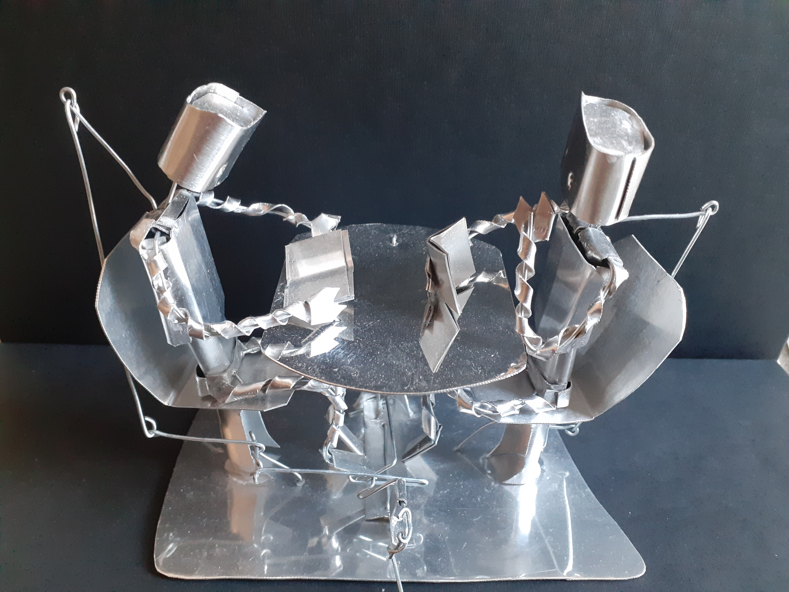

Awkward Reading Bots
They're not very focused on their reading.
Concept
A pretty simple concept and an even simpler movement. At first I wanted to use this occasion to try out a different kind of mechanism, with several axes instead of just one. In the end it felt unnecessary though. I ended up focusing on making the whole thing as sturdy as possible.
Construction
Not much to say here, the making process is starting to get pretty consistent. Only the planning took more time than usual, mainly for the wiring that would make the whole thing more resistant.
New things
- Planning the placement of wires ahead of time: there are wires connecting the robots' hands to the table and their feet to bottom plate. The table is also fixed using wires and doesn't budge at all.
What needs improvement
- Movement too discrete: it's not as fun to watch as most of the others automata.
- A bit bland: the table coud have used some decorating.
Videos and more pictures